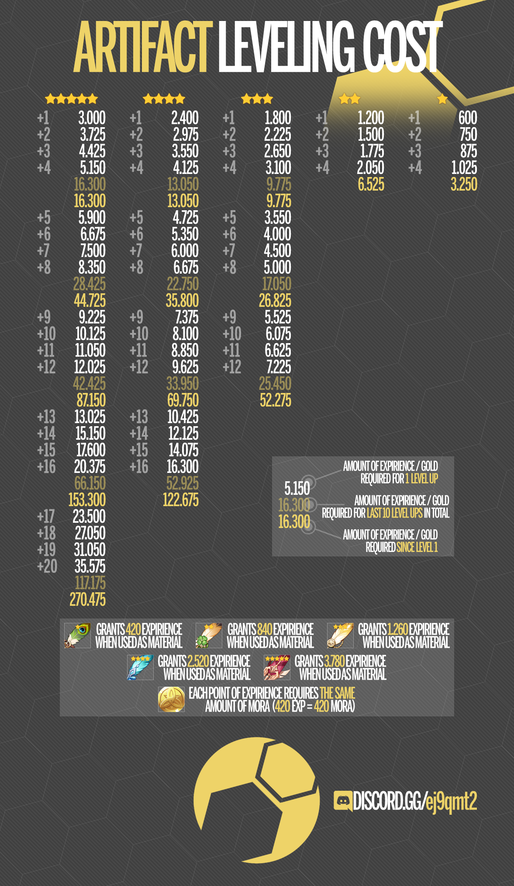

Mora Cost Artifact
How much mora required to upgrade artifact to maximum level on genshin impact?
| Rarity |
|
|
|
|
|
|---|---|---|---|---|---|
|
Exp Multiplier Chance
When consuming an enhanced artifact, in addition to the Base EXP
granted, 80% of the EXP used for its upgrades will be recovered
at no extra Mora. For example, using a
|
1% | 1% | 1% | 9% | 90% |
| Mora cost/EXP | 3,780 | 2,520 | 1,260 | 840 | 420 |
|
Current Level |
EXP to Next Level (Cumulative EXP) |
||||
| 0 | 3,000 | 2,400 | 1,800 | 1,200 | 600 |
| 1 |
3,725 (3,000) |
2,975 (2,400) |
2,225 (1,800) |
1,500 (1,200) |
750 (600) |
| 2 |
4,425 (6,725) |
3,550 (5,375) |
2,650 (4,025) |
1,775 (2,700) |
875 (1,350) |
| 3 |
5,150 (11,150) |
4,125 (8,925) |
3,100 (6,675) |
2,050 (4,475) |
1,025 (2,225) |
| 4 |
5,900 (16,300) |
4,725 (13,050) |
3,550 (9,775) |
MAXED (6,525) |
MAXED (3,250) |
| 5 |
6,675 (22,200) |
5,350 (17,775) |
4,000 (13,325) |
||
| 6 |
7,500 (28,875) |
6,000 (23,125) |
4,500 (17,325) |
||
| 7 |
8,350 (36,375) |
6,675 (29,125) |
5,000 (21,825) |
||
| 8 |
9,225 (44,725) |
7,375 (35,800) |
5,525 (26,825) |
||
| 9 |
10,125 (53,950) |
8,100 (43,175) |
6,075 (32,350) |
||
| 10 |
11,050 (64,075) |
8,850 (51,275) |
6,625 (38,425) |
||
| 11 |
12,025 (75,125) |
9,625 (60,125) |
7,225 (45,050) |
||
| 12 |
13,025 (87,150) |
10,425 (69,750) |
MAXED (52,275) |
||
| 13 |
15,150 (100,175) |
12,125 (80,175) |
|||
| 14 |
17,600 (115,325) |
14,075 (92,300) |
|||
| 15 |
20,375 (132,925) |
16,300 (106,375) |
|||
| 16 |
23,500 (153,300) |
MAXED (122,675) |
|||
| 17 |
27,050 (176,800) |
||||
| 18 |
31,050 (203,850) |
||||
| 19 |
35,575 (234,900) |
||||
| 20 |
MAXED (270,475) |
||||

All articles in this blog are licensed under CC BY-NC-SA 4.0 unless stating additionally.
Related Articles